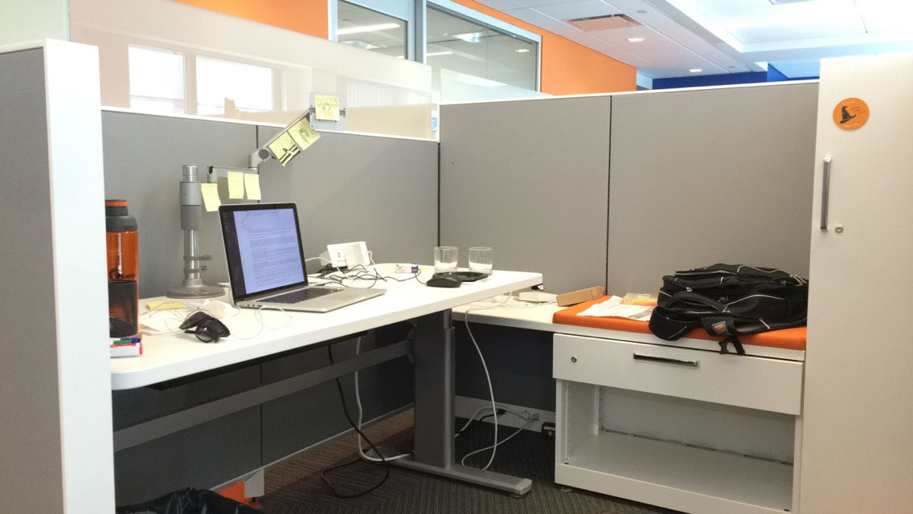

After a couple of unsuccesful phone and in person interviews, I was lucky to have received an oppurtubity from one of the leading Content Delivery Network servicesin the world, Akamai Technologies.
I was hired as a Visual Designer and currently work with the User Experience team in the security department.
First Day
August 31st was the day I first stepped in to this new phase and was very excited to experience the work culture at Akamai. I was one of the many interns called in for the orientation on 31st August. The first part of are orientation began with setting us up for work. We were handed our requested machines to work with and dealt with the security settings for the machine(License certificates, passwords, company email etc.). In the second part of the orientation, we were told about the fun yet professional work culture being followed at Akamai. We were also given a summary of the different teams in different locations who strive to make Akamai what it is today.
At my desk
Soon after the orientation, I headed to my desk to find the most perfect cubicle. Decorated with the company colors and cabinets and drawers for my essentials, I was assured this is going to be the perfect place to work. Not to forget, I also noticed a game room with an XBox set up at about 2 cubicles away.
My awesome manager and supervisor took me out for lunch to a joint next to the office. We spoke about the work at Akamai, the interview process and how Akamai is going to be a beneficial step in my career.
The work
Before I could begin some actual UX work, I was asked to understand the company products, its functionalities and the guidelines followed by the UX design team at Akamai. For a span of two weeks, I read PDFs about security dashboards called the KONA security and its many plugins such as WAP, WAF and APIs. Following the research and understanding, I will be working on the complete revamp of the KONA security application.